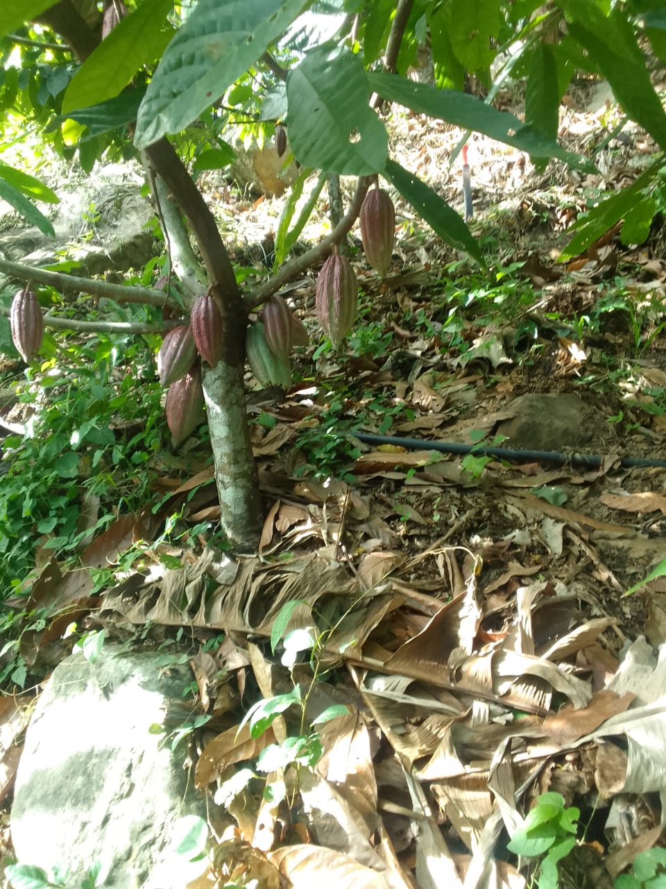
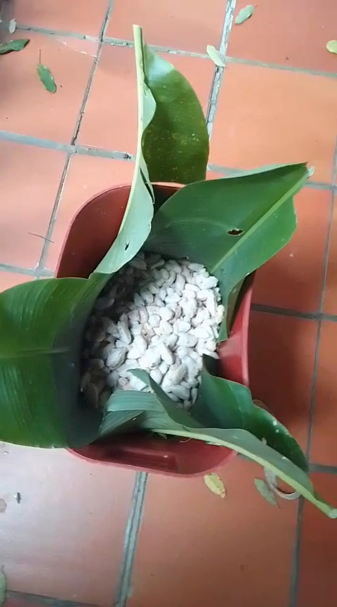
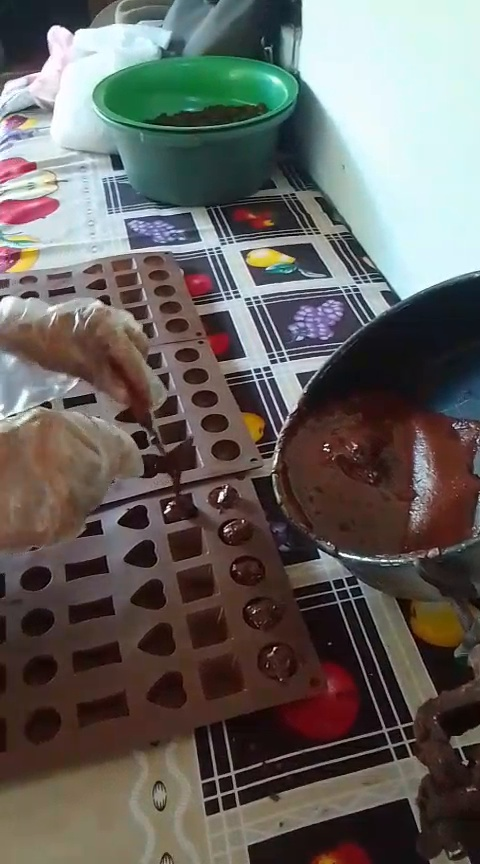
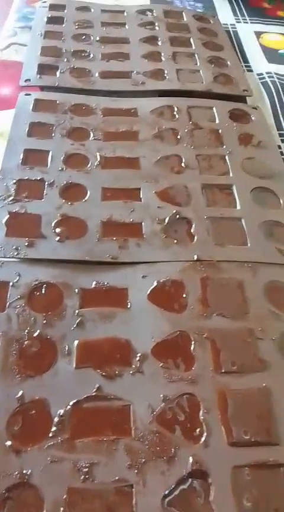
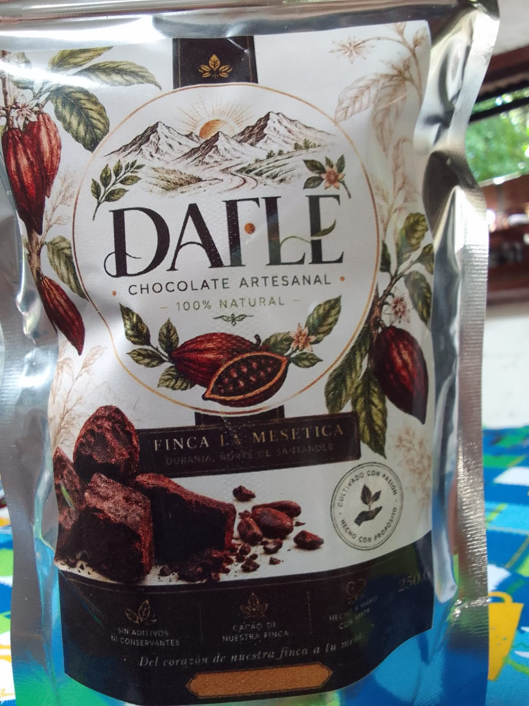
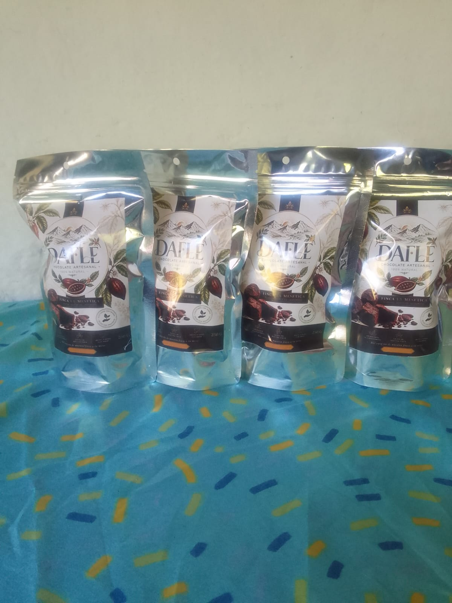
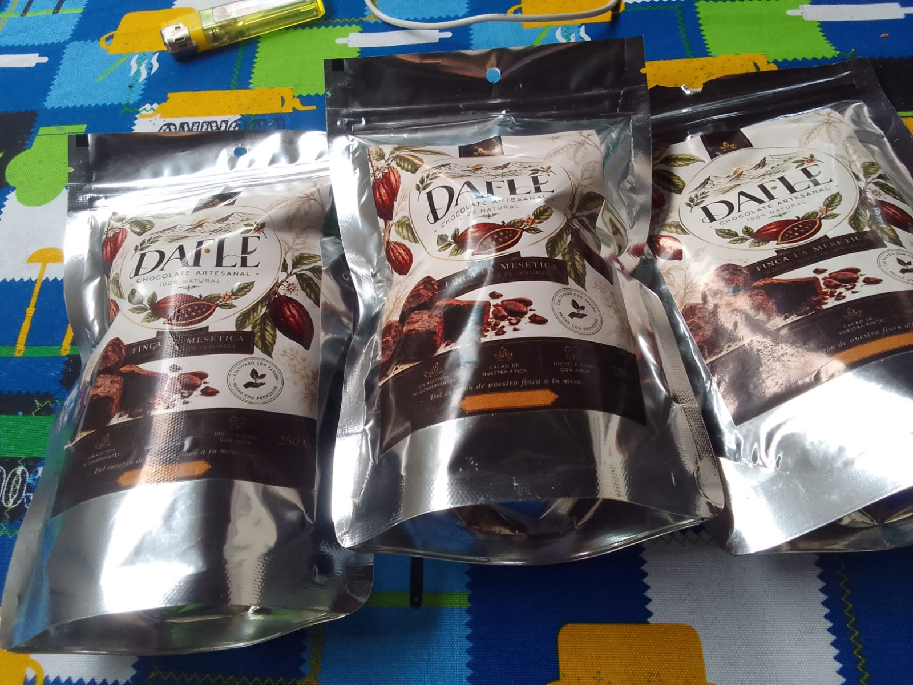

01El origen
El cacao comienza en el cultivo, donde cada fruto representa la materia prima de nuestro chocolate.
DEL CACAO AL CHOCOLATE
Una propuesta nacida del cacao, elaborada con cuidado y pensada para compartir sabor, origen y autenticidad.
NUESTRA ESENCIA
DAFLE es un emprendimiento de chocolate artesanal que transforma cacao en productos elaborados con dedicación, buscando conservar la esencia de la materia prima y crear una experiencia cercana con el consumidor.
Trabajamos con una visión responsable y sostenible, cuidando cada etapa del proceso y construyendo una marca con identidad propia.
“Transformamos cacao en chocolate artesanal, sin aditivos, con responsabilidad y propósito.”
DEL CACAO AL CHOCOLATE
El proceso se cuenta con imágenes y videos reales de nuestra producción.

01El cacao comienza en el cultivo, donde cada fruto representa la materia prima de nuestro chocolate.

02El cacao pasa por etapas de preparación y acondicionamiento que desarrollan las características de su sabor.

03La mezcla se trabaja artesanalmente hasta alcanzar la textura adecuada para su moldeado.

04El chocolate toma forma en distintas presentaciones, listo para convertirse en una experiencia DAFLE.
PROCESO REAL
Este registro hace parte del proceso productivo real que inspira la identidad de DAFLE.
NUESTRO PRODUCTO
Elaborado en pequeños procesos, con atención al detalle en cada etapa.
Una propuesta enfocada en resaltar el cacao y la sencillez de sus ingredientes.
Una marca que busca crecer de forma consciente, conectando producto, territorio y consumidor.
MISIÓN
VISIÓN 2030
NUESTRAS RAÍCES
DAFLE nace de la tierra, del trabajo familiar y de una historia construida alrededor del campo. Nuestro chocolate artesanal representa nuestras raíces, el cacao cultivado en nuestra finca y el propósito de transformar cada fruto con dedicación y amor.

DEL CORAZÓN DE NUESTRA FINCA A TU MESA
Chocolate elaborado artesanalmente a partir de cacao de nuestra finca. Una presentación que reúne el origen, el proceso y la identidad de DAFLE.



DISFRUTA DAFLE
Del cacao de nuestra finca a una bebida preparada en casa. Conoce paso a paso una forma de disfrutar nuestro chocolate artesanal.

HABLEMOS
Escríbenos para conocer disponibilidad, presentaciones y pedidos.
WhatsApp · 311 469 0113